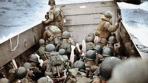
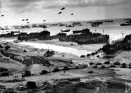

Operation Overlord
Operation Overlord was the code name for the Allied invasion of Western Europe during World War II, which began on June 6, 1944, with the famous D-Day landings in Normandy, France. This operation was the largest amphibious invasion in history and marked a turning point in the war, as it ultimately led to the liberation of Nazi-occupied Europe and the defeat of Adolf Hitler's regime.
Background and Motivation
The plan for Operation Overlord involved a multi-pronged approach, combining air, sea, and ground forces. The operation was meticulously planned and involved extensive deception campaigns to mislead the Germans about the actual landing site.
The idea of a cross-channel invasion had been debated for years, but it was not until 1943—following the successful campaigns in North Africa and Italy—that the Allies began to make serious plans for such an operation. The invasion of Normandy was chosen due to its strategic location and relatively under-defended coastline, making it a feasible landing site for a massive assault.
Key Features of Operation Overlord
The Invasion Force
The operation was led by General Dwight D. Eisenhower, who commanded the Allied Expeditionary Force. The invasion consisted of more than 156,000 troops from the United States, the United Kingdom, Canada, and other Allied nations. They were supported by thousands of ships, planes, and vehicles.
The Landings (D-Day)
On June 6, 1944, the Allies launched a surprise landing on five beaches in Normandy: Utah, Omaha, Gold, Juno, and Sword. Each beach was assigned to a different Allied force, with American forces landing at Utah and Omaha, British forces at Gold and Sword, and Canadian forces at Juno.
Airborne Operations
In addition to the beach landings, airborne divisions dropped behind enemy lines to secure key locations, disrupt German communications, and prevent reinforcements from reaching the beaches. These operations were critical in ensuring the success of the landings.
The Deception Campaign
The Allies executed a sophisticated deception campaign known as Operation Bodyguard. This included the creation of fake armies, misleading radio transmissions, and even the use of inflatable tanks to convince the Germans that the invasion would take place at Pas-de-Calais rather than Normandy.
Implementation and Impact
Operation Overlord was a tremendous success, but it came at a high cost. The initial landings on D-Day were met with fierce German resistance, particularly at Omaha Beach, where American forces suffered heavy casualties. However, the Allies quickly established a beachhead, and reinforcements and supplies began flowing in.
The success of the invasion allowed the Allies to push inland, liberating towns and cities in Normandy and eventually driving the German forces back. Within months, the Allies had liberated Paris and were advancing into Belgium and the Netherlands. Operation Overlord marked the beginning of the end for Nazi Germany, as it opened a second front in Europe and forced the Germans to fight on multiple fronts.
By the end of 1944, the Allies had made significant inroads into German-occupied territory, and the pressure on Nazi Germany was mounting. The invasion also provided a crucial platform for the launch of Operation Market Garden and the eventual push into Germany itself in 1945.
International Reaction
The success of Operation Overlord was a major boost to Allied morale and demonstrated the effectiveness of cooperation between the United States, the United Kingdom, and other nations. For the Axis powers, the invasion represented a major setback, as it opened up a new front that stretched their resources and forced them to divert troops and supplies from the Eastern Front.
The Soviet Union, which had been urging the Allies to open a second front for years, saw the invasion as a much-needed relief. While the Soviets had been bearing the brunt of the fighting on the Eastern Front, the Western Allies' successful invasion helped to spread the German military thin and hasten the collapse of the Third Reich.
End of the Operation and Legacy
The success of Operation Overlord laid the foundation for the eventual defeat of Nazi Germany. By the time the Allies reached Germany in 1945, the Axis powers were exhausted, and the collapse of the Nazi regime was inevitable. The operation was a defining moment in World War II and marked the beginning of the end for the Axis powers in Europe.
The legacy of Operation Overlord is profound. It solidified the United States and the United Kingdom's leadership in the post-war world and served as a testament to the power of Allied cooperation. The invasion also demonstrated the effectiveness of combined arms warfare, which integrated air, sea, and land forces to achieve strategic objectives. The success of the operation paved the way for the post-war rebuilding of Europe, including the establishment of NATO and the European Union.
Operation Overlord also had lasting cultural and historical significance. The bravery and sacrifice of the soldiers involved in the invasion, particularly those who fought on D-Day, are remembered in countless memorials and museums around the world. The operation remains one of the most iconic military campaigns in history, symbolizing the determination and unity of the Allied nations in their fight against tyranny.